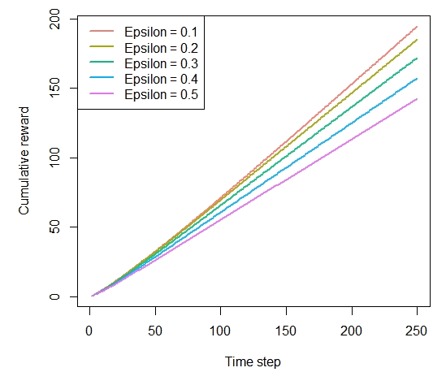
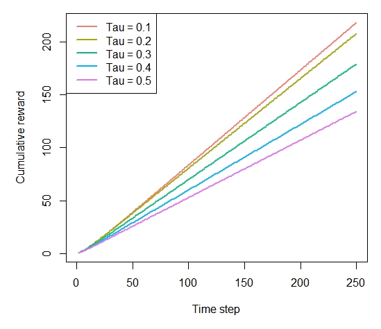
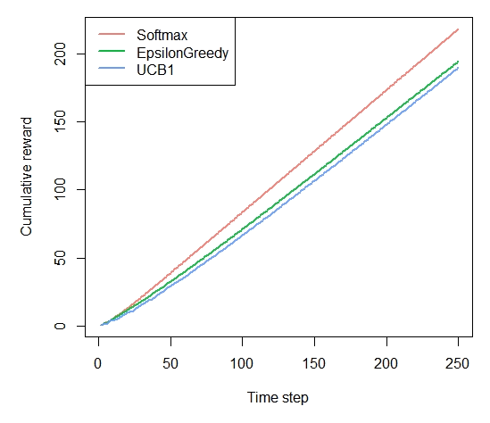

Demo: Replication of John Myles White, Bandit Algorithms for Website Optimization
Robin van Emden
2020-07-25
Source:vignettes/website_optimization.Rmd
website_optimization.RmdSimulation of multi-armed Bandit policies following John Myles White’s “Bandit algorithms for website_optimization”.
The book, which offers a comprehensive entry-level introduction to context-free bandit policies, is available here: John Myles White. The orignal (Python) code for the book can be found in its complementary GitHub repository.
Discrepancies with the book
We did encounter one minor issue with the original code used to generate the plots in the book: its bandit policies always choose the first arm (in other words, the arm with the lowest index) when rewards between arms are tied. In the original Python code:
def ind_max(x):
m = max(x)
return x.index(m)This introduces a bias that adds up over time, changing simulations’ results and plots. In R, (which uses 1 based indexing) this corresponds to always doing:
rewards <- c(0,0,1,0,1) max_reward <-which.max(rewards) max_reward # always contains lowest index, 3 in this case, biasing results
Contextual correctly returns the index of one of the tied maxima random, fixing the bias, resulting in slightly different plots. In Python, a patch along the following lines ought to resolve this issue:
def ind_max(x):
max_value = max(x)
max_keys = [k for k, v in enumerate(x) if v == max_value]
return random.choice(max_keys)In R, this corresponds to:
rewards <- c(0,0,1,0,1) max_reward <- which(rewards == max(rewards)) if(length(max_reward) > 1){ max_reward <- sample(max_reward, 1) } max_reward # randomly assigned either 3 or 5, no bias
To illustrate, a replication of the original Figure 4-3 when running a simulation with the biased arm selection, (as used in the book) on the left, contextual’s unbiased simulation to the right:

Chapter 4 - Debugging and epsilon greedy
prob_per_arm <- c(0.1, 0.1, 0.1, 0.1, 0.9) horizon <- 250 simulations <- 5000 bandit <- BasicBernoulliBandit$new(prob_per_arm) agents <- list(Agent$new(EpsilonGreedyPolicy$new(0.1), bandit, "Epsilon = 0.1"), Agent$new(EpsilonGreedyPolicy$new(0.2), bandit, "Epsilon = 0.2"), Agent$new(EpsilonGreedyPolicy$new(0.3), bandit, "Epsilon = 0.3"), Agent$new(EpsilonGreedyPolicy$new(0.4), bandit, "Epsilon = 0.4"), Agent$new(EpsilonGreedyPolicy$new(0.5), bandit, "Epsilon = 0.5")) simulation <- Simulator$new(agents, horizon, simulations) history <- simulation$run()
Figure 4-4. How much reward has the epsilon greedy algorithm earned by trial t?
plot(history, type = "cumulative", regret = FALSE)

Chapter 5 - Softmax
agents <- list(Agent$new(SoftmaxPolicy$new(0.1), bandit, "Tau = 0.1"), Agent$new(SoftmaxPolicy$new(0.2), bandit, "Tau = 0.2"), Agent$new(SoftmaxPolicy$new(0.3), bandit, "Tau = 0.3"), Agent$new(SoftmaxPolicy$new(0.4), bandit, "Tau = 0.4"), Agent$new(SoftmaxPolicy$new(0.5), bandit, "Tau = 0.5")) simulation <- Simulator$new(agents, horizon, simulations) history <- simulation$run()


Figure 5-4. How much reward has the softmax algorithm earned by trial t?
plot(history, type = "cumulative", regret = FALSE)

Chapter 6 - UCB
agents <- list(Agent$new(SoftmaxPolicy$new(0.1), bandit, "Softmax"), Agent$new(EpsilonGreedyPolicy$new(0.1), bandit, "EpsilonGreedy"), Agent$new(UCB1Policy$new(), bandit, "UCB1")) simulation <- Simulator$new(agents, horizon, simulations) history <- simulation$run()

Figure 6-5. How much reward has the UCB algorithm earned by trial t?
plot(history, type = "cumulative", regret = FALSE)
